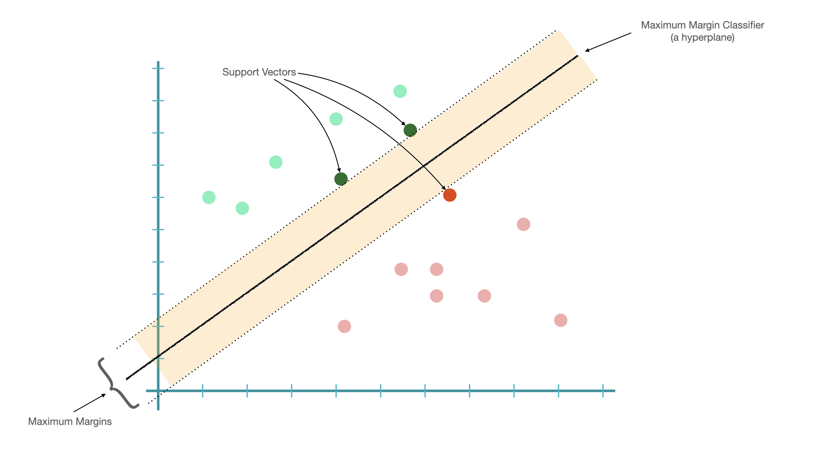

Classification Models#
Before the era of deep learning, probability-based classifiers are commonly used in many ML NLP tasks.
There are two types of probability-based models: generative and disriminative models.
Let’s assume that we have our data as d, and their class labels as c.
Generative:
The goal of training is NOT to find \(P(c|d)\).
Rather, based on the Bayes Theorem, we can estimate the joint probability of \(P(c,d)\), which, according to Bayes Theorem, can be reformulated as \(P(c,d)=P(d)\times P(c|d) =P(c) \times P(d|c)\)
That is, the training in generative models is based on the joint probability of the data and the class, i.e., \(P(c,d)\)
Examples: N-gram Language Models, Naive Bayes, Hidden Markov Model, Probabilistic Context-Free Grammars.
Discriminative:
The goal of training is to directly find \(P(c|d)\).
Training is based on the conditional Probability of the class given the data, i.e., \(P(c|d)\).
Examples: Logistic regression, Maximum Entropy Models, Conditional Random Field, Support Vector Machine, Perceptron.
Strengths of discriminative models:
They give high accuracy performance.
They make it easier to include linguistically relevant features.
Other classification models:
Tree-based methods (Decision tree, Random Forest)
Neural Network
Naive Bayes#

Naive Bayes features the Bayes Theorem:
Intuition of Naive Bayes#

In Naive Bayes, given a document \(d\) and a class \(c\), the goal is to find the maximum joint probability \(P(c,d)\). And according bayes rule, the goal (of finding the maximum joint probability) can be reformulated as finding the maximum of the posterior probability of the class, \(P(c|d)\):
Because the \(P(d)\) is a constant for all classes estimation, we can drop the denominator. And now the goal is to find the class \(c\) that maximizes the posterior probability of the class, i.e., \(P(c|d)\). (MAP = Maximum A Posterior Estimation)
In Naive Bayes, the probabilities \(P(C=c_i)\) and \(P(X_i|C=c_i)\) are parameters.
The standard, maximum likelihood, approach is to calculate these parameters (probabilities) using MLE estimators based on the training data.
For example, for class prior probabilities, \(P(C=c_i)\), we count the cases where \(C=c_i\) and divide by the sample size.
Similarly, each feature \(x_i\) of the document is in the form of a probability value of an observed event given the class, \(P(x_i|C=c_i)\). For example, the probability of observing the word ‘好看’ (\(x_i\)) when the document class is \(c_i\). Same for conditional probabilities \(P(好看|C=c_i)\).
A document needs to be vectorized through feature engineering into a numeric representation, i.e., a set of n features from the document, \(\{x_1, x_2, ..., x_n\}\)
Given a class \(c\) and a set of \(n\) features from the document, \(\{x_1, x_2, ..., x_n\}\), we can denote the posterior probability of each class \(c\) as follows:
Important assumptions in Naive Bayes:
Independence Assumption: Assume features are independent of each other.
Conditional Independence: Assume the feature probabilities \(P(x_i|C=c_i)\) are independent given the label \(c\).
Then we can simply the equation:
Multinomial Naive Bayes is an extension of the Naive Bayes for predicting and classifying data points, where the number of distinct labels or outcomes are more than two.
Issues of Smoothing
For unseen features in a new document, e.g., \(P(x|c)\), this would render the entire posterior probability of the class to be zero.
Laplace smoothing (Add-one)
Lidstone smooting (Self-defined \(\alpha\) < 1)
cf.
sklearn.naive_bayes.GaussianNB(*, priors=None, var_smoothing=1e-09)
Logistic Regression#
Logistic Regression is also a form of probabilistic statistical classification model.
The model is trained by maximizing directly the probability of the class (c) given the observed data (d), i.e., \(P(c|d)\).
Logistic Regression is similar to Linear Regression, whose predicted values are both numeric (cf. Generalized Linear Models).
A document needs to be vectorized through feature engineering into a numeric representation, i.e., a set of \(n\) features characterizing the semantics of the document, \(\{x_1, x_2, ..., x_n\}\)
Then Logistic Regression models the probability of the class given these observed values as follows:
Each feature \(x_i\) of the document is a function that characterizes the relevant linguistic properties of the document. These features can be all manually annotated or created automatically.
These features are often in simple forms that are of binary values or numeric values within a range:
\[\begin{split} \begin{align*} x_1 &= f_1(x_1) = [Contains("好看") ] = \{0, 1\} \\ x_2 &= f_2(x_2) = [Contains("絕配") ] = \{0, 1\} \\ x_3 &= f_3(x_3) = [FreqOf("覺得")] = \{\textit{Any Positive Number}\}\\ &...\\ \end{align*} \end{split}\]
But so far the model prediction (\(y\)) could be any number (\(-\infty\) to \(\infty\)) based on the current linear model.
In order to make sure the predicted values of the model are within the range of 0 and 1 (i.e., a probability-like value), the dependent variable \(y\) is transformed with a so-called link function.
That is, link functions transform the predicted \(y\) into a range more appropriate for linear modeling.
In particular, in Binary Logistic Regression, the inverse logit transformation is used, transforming \(y\) from the range of \(-\infty\) to \(\infty\) to into probability values ranging from 0 to 1.
And we can re-formulate the model equation as:
In model prediction, the model will then determine the class of the document by choosing the class that maximizes the conditional probability of \(P(c|d)\).
In training:
Given a document in a training set, \(d\), the initial Logistic Regression model will output the predicted conditional probability of \(d\) being the class, \(c\), i.e., \(P(c|d)\).
This is the likelihood of the document.
And the optimal Logistic Regression is the one that maximizes the likelihoods of the documents in the entire training set.
This maximum likelihood approach is similar to the least squares method in linear regression.
Interpreting the parameters (coefficients \(\beta_i\))
The coefficient refers to the change of the odds of having the target class label in relation to a specific predictor.
Odds are defined as:
\[\begin{split} \begin{align}\\ odds &=\frac{\textit{The probability that the event will occur}}{\textit{The probability that the event will NOT occur}} \\&= \frac{P_{\textit{relevant class}}}{1 - P_{\textit{relevant class}}} \end{align} \end{split}\]
A quick example (based on Stefan Gries’ data): (skipped)
We use the type of the subordinate clauses (
SUBORDTYPE) to predict theORDERof the main and subordinate clauses.\(X: \{caus, temp\}\)
\(y: \{mc-sc, sc-mc\}\)
Unit = sentences; Label = main-subordinate clauses orders.
We run a logistic regression, using SUBORDTYPE as the predictor and ORDER as the response variable.
%load_ext rpy2.ipython
import pandas as pd
## data from Stefan Gries' "Statistics for Linguistics with R"
csv= pd.read_table('../../../RepositoryData/data/gries_sflwr/_inputfiles/05-3_clauseorders.csv')
csv
| CASE | ORDER | SUBORDTYPE | LEN_MC | LEN_SC | LENGTH_DIFF | CONJ | MORETHAN2CL | |
|---|---|---|---|---|---|---|---|---|
| 0 | 4777 | sc-mc | temp | 4 | 10 | -6 | als/when | no |
| 1 | 1698 | mc-sc | temp | 7 | 6 | 1 | als/when | no |
| 2 | 953 | sc-mc | temp | 12 | 7 | 5 | als/when | yes |
| 3 | 1681 | mc-sc | temp | 6 | 15 | -9 | als/when | no |
| 4 | 4055 | sc-mc | temp | 9 | 5 | 4 | als/when | yes |
| ... | ... | ... | ... | ... | ... | ... | ... | ... |
| 398 | 1794 | mc-sc | caus | 13 | 23 | -10 | weil/because | no |
| 399 | 4095 | mc-sc | caus | 10 | 7 | 3 | weil/because | yes |
| 400 | 2733 | mc-sc | caus | 8 | 5 | 3 | weil/because | yes |
| 401 | 350 | mc-sc | caus | 8 | 11 | -3 | weil/because | no |
| 402 | 208 | sc-mc | caus | 9 | 6 | 3 | weil/because | yes |
403 rows × 8 columns
To explain the model in a more comprehensive way, I like to switch back to R for the statistical outputs. I think they are more intuitive.
%%R -i csv
# library(readr)
# csv= read_delim('../../../RepositoryData/data/gries_sflwr/_inputfiles/05-3_clauseorders.csv','\t')
print(head(csv))
print(table(csv$SUBORDTYPE, csv$ORDER))
CASE ORDER SUBORDTYPE LEN_MC LEN_SC LENGTH_DIFF CONJ MORETHAN2CL
0 4777 sc-mc temp 4 10 -6 als/when no
1 1698 mc-sc temp 7 6 1 als/when no
2 953 sc-mc temp 12 7 5 als/when yes
3 1681 mc-sc temp 6 15 -9 als/when no
4 4055 sc-mc temp 9 5 4 als/when yes
5 967 sc-mc temp 9 5 4 als/when yes
mc-sc sc-mc
caus 184 15
temp 91 113
%%R
lg = glm(factor(csv$ORDER)~factor(csv$SUBORDTYPE), family="binomial")
summary(lg)
Call:
glm(formula = factor(csv$ORDER) ~ factor(csv$SUBORDTYPE), family = "binomial")
Deviance Residuals:
Min 1Q Median 3Q Max
-1.2706 -0.3959 -0.3959 1.0870 2.2739
Coefficients:
Estimate Std. Error z value Pr(>|z|)
(Intercept) -2.5069 0.2685 -9.336 <2e-16 ***
factor(csv$SUBORDTYPE)temp 2.7234 0.3032 8.982 <2e-16 ***
---
Signif. codes: 0 ‘***’ 0.001 ‘**’ 0.01 ‘*’ 0.05 ‘.’ 0.1 ‘ ’ 1
(Dispersion parameter for binomial family taken to be 1)
Null deviance: 503.80 on 402 degrees of freedom
Residual deviance: 386.82 on 401 degrees of freedom
AIC: 390.82
Number of Fisher Scoring iterations: 5
Based on the model parameters, we get the formula for the probability prediction of our response variable:
Tip
To interpret the coefficients we need to know the order of the two class labels in the outcome variable. The most straightforward way to do this is to create a table of the outcome variable.
As shown above, the second level of ORDER is sc-mc, this tells us that the coefficients in the Logistic Regression are predicting whether or not the clause order is sc-mc.
Now we can estimate the following probabilities:
Probability of
sc-mcwhen subordinate iscause:
\[\begin{split} \begin{align*}\\ P(type=scmc|x_1=cause) &= \frac{1}{1+e^{-y}}\\ &=\frac{1}{1+e^{-({-2.50 + 2.72 \times x_1})}} \\ &=\frac{1}{1+e^{-({-2.50 + 2.72 \times 0})}}\\ &= 0.0758 \end{align*} \end{split}\]
Probability of
sc-mcwhen subordinate istemp:
Now we can also compute the odds of the predicted probability.
The odds of an event is the ratio of:
Simply put, odds are just a ratio of two complementary probability values.
Now we can compute the two odds:
The odds of the probabilities when the subordinate is
caus:
\[ odds_1 = \frac{0.07}{1-0.07} = 0.08 \]The odds of the probabilities when the subordinate is
temp:
\[ odds_2 = \frac{0.55}{1-0.55} = 1.25 \]
Finally, we can compute the log odds ratios (the log of the ratios between two odds):
\[ \textit{Odds Ratio} = \frac{odds_2}{odds_1} = \frac{1.25}{0.08} = 15.18 \]\[ \textit{Log Odds Ratio} = log\left(\frac{odds_2}{odds_1}\right) = log\left(\frac{1.25}{0.08}\right) = 2.72 \]
That is the meaning of the coefficient \(\beta_1, 2.72\):
The odds (of having
sc-mcorder) when the subordinate clause istempare \(e^{2.7234}= 15.23\) times more than the odds when the subordinate clause iscaus.Or the log odds ratio increases 2.72 times when the subordinate clause is
tempas compared to when the subordinate iscaus.
%%R
y1= 1/(1+exp(-(-2.50 + 2.72*0))) # prob of sc-mc when SUBORDTYPE = 0 (caus)
y2= 1/(1+exp(-(-2.50 + 2.72*1))) # prob of sc-mc when SUBORDTYPE = 1 (temp)
odds1 = y1/(1-y1) # odds when SUBORDTYPE = 0
odds2 = y2/(1-y2) # odds when SUBORDTYPE = 1
cat("Prob(type=sc-mc|subordtype=cause):", y1, "\n")
cat("The odds of Prob(type=mc-sc|subordtype=cause) vs. Prob(type=sc-mc|subordtype=cause):", odds1,"\n\n")
cat("Prob(type=sc-mc|subordtype=temp):", y2, "\n")
cat("The odds of Prob(type=mc-sc|subordtype=temp) vs. Prob(type=sc-mc|subordtype=temp):", odds2, "\n\n")
odds_ratio = odds2/odds1
log_odds_ratio = log(odds_ratio)
cat("Odds Ratioos of subordtype=temp vs. subordtype=cause:", odds_ratio, "\n")
cat("Log Odds Ratios of subordtype=temp vs. subordtype=cause:", log_odds_ratio)
Prob(type=sc-mc|subordtype=cause): 0.07585818
The odds of Prob(type=mc-sc|subordtype=cause) vs. Prob(type=sc-mc|subordtype=cause): 0.082085
Prob(type=sc-mc|subordtype=temp): 0.5547792
The odds of Prob(type=mc-sc|subordtype=temp) vs. Prob(type=sc-mc|subordtype=temp): 1.246077
Odds Ratioos of subordtype=temp vs. subordtype=cause: 15.18032
Log Odds Ratios of subordtype=temp vs. subordtype=cause: 2.72
Support Vector Machine (SVM)#
To understand what SVM is, we probably need to introduce the idea of support vectors.
Given a linearly separable dataset, it is easy to find a hyperplane (in 2D, that would be a line) that separates data into two distinct sub-groups.
The shortest distance between the observations and the threshold (hyperplane) is called the margin.
A hyperplane that gives us the largest margin to make classification is referred to as Maximum Margin Classifier.
These threshold cases are the vectors that support the maximum margin classifier, henceforth, known as the “support vectors”. 
Issues with Maximum Margin Classifier:
Maximum Margin Classifier is very sensitive to outliers.
The classifier may be too biased toward the class with fewer outliers.

If we choose a hyperplane which allows misclassifications, we may be able to find a better classifier.
When we allow misclassifications, the distance between the observations and the hyperplane is called a soft margin.
A classifier allowing misclassifications (i.e., based on soft margins) is referred to as soft margin classifier, or support vector classifier.
The observations on the edge and within the soft margin are called support vectors.
Support Vector Classifiers can deal with observations with outliers and the assumption is that the observations are linearly separable.
What if the observations are not linearly separable in the first place? This is where Support Vector Machine comes in!
Intuition of Support Vector Machine:
Start with data in a relatively low dimension and seek linear solutions
Move the data into a higher dimension (when no obvious linear classifier found)
Find a Support Vector Classifier that separates the higher dimensional data into two groups

The mathematical tricks of moving data into a higher dimension are the kernel functions. This process is called the Kernel Tricks.
SVM often uses two kernel functions to find support vector classifiers in higher dimensions.
Polynomial Kernel
Radial Basis Function Kernel (RBF)
SVM has a cost function (C), which controls the compromise of the misclassifications and margin sizes.
C is the model penalty for the data points that fall on the wrong side of the hyperplane.
A smaller C creates a softer (larger) margin, allowing more misclassifications.
A larger C creates a narrower margin, allowing fewer misclassifications.
The greater the cost parameter, the harder the optimization will try to achieve 100 percent separation.
Heuristics for SVM
There is no reliable rule for matching a kernel to a particular learning task.
The fit depends heavily on the concept to be learned as well as the amount of training data and the relationships among the features.
Trial and error is required by training and evaluating several SVMs on a validation dataset (i.e., k-fold cross validation)
The choice of kernel is often arbitrary because the performances with different kernels may vary only slightly.
Other Discriminative Models (skipped)#
There are many more ways to learn the weights (i.e., \(\beta_i\)) in the discriminative models. Different algorithms may prioritize different link functions to train the model parameters.
In this course, we will not cover all the details of these variants. Please refer to machine learning courses for more details on these algorithms.
Maximum Entropy Model (Maxent)#
Maxent is very similar to logistic regression, and differs in mainly its way of parameterization (e.g., feature functions, link functions)
In Maxent, each feature function is a function of both the text feature and the class, i.e., \(f(x_i, c_i)\).
The model will assign to each feature a weight.
Maxent uses a softmax function to transform the sum of the weigthed feature values into probabilities. (The exponetial transformation of the sum of the weighted feature values make all predicted values positive.)
Numerator = The probability of the feature i co-occuring with specific class.
Denominator = The sum of the probability of the feature co-occurring with the other classes.
Other Classification Models (skipped)#
There are other classification models that are not probabilistic
Decision Tree
It uses a split condition to predict class labels based on one or multiple input features.
The classification process starts from the root node of the tree; at each node, the classifier will check which input feature will most effectively split the data into sub-groups.
Emsemble Methods#
Bagging
Take subsets of data (e.g., bootstrap samples) and train a model on each subset in parallel
The subsets are allowed to simultaneously vote on the outcome
The final outcome is often an average aggregation.
Example: Random Forests
Boosting
Utilize sequential modeling by improving one model from the errors of the previous model
Often use the output of one model as an input into the next in a form of sequential processing
Example: Gradient boosting machines
Conclusion#
Feature engineering is a lot more important than algorithm selection.
With good feature representations of the data, usually it doesn’t really matter which machine learning algorithm we choose.
Generally, discriminative models out-perform generative models.
Maybe one day the optimal algorithm can be determined automatically via machine learning as well!!
References#
NLTK Book, Chapter 6.
Sarkar (2020), Chapter 5.
Geron (2019), Chapter 5-7